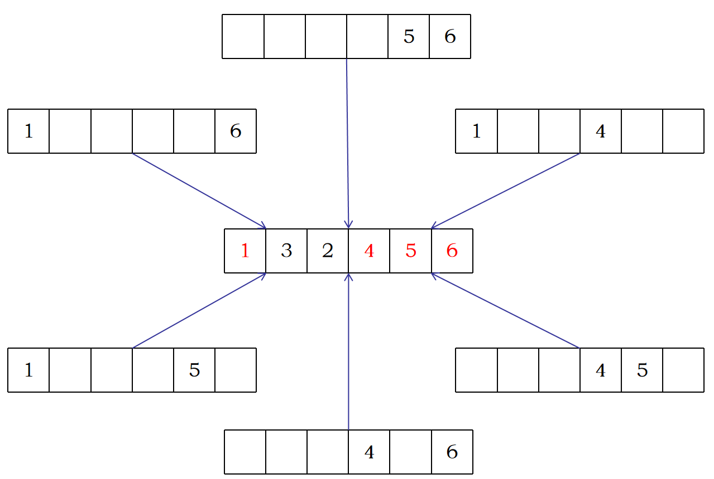

whoseJam
假设有f和g两个函数
f函数是便于计算的
g函数是难以计算的
我们可以尝试用f去表示g
最最最最基础的反演，别的反演大多都可以基于这玩意推导出来
二项式反演有两种形式
$$ f(n)=\sum_{i=0}^n C_n^i g(i) \Longleftrightarrow g(n)=\sum_{i=0}^n C_n^i (-1)^{n-i} f(i) $$
又或者......
$$ f(n)=\sum_{i=0}^n C_n^i (-1)^i g(i) \Longleftrightarrow g(n)=\sum_{i=0}^n C_n^i (-1)^i f(i) $$
起点：$g(n)=\sum_{i=0}^n C_n^i (-1)^i f(i)$
已知：$f(n)=\sum_{i=0}^n C_n^i (-1)^i g(i)$
想要推导：$g(n)=g(n)$
起点：$g(n)=\sum_{i=0}^n C_n^i (-1)^i f(i)$
已知：$f(n)=\sum_{i=0}^n C_n^i (-1)^i g(i)$
$$ \begin{aligned} g(n)&=\sum_{i=0}^nC_n^i(-1)^if(i)\\ &=\sum_{i=0}^nC_n^i(-1)^i\sum_{j=0}^iC_i^j(-1)^jg(j)\\ &=\sum_{i=0}^n(-1)^i\sum_{j=0}^iC_n^iC_i^j(-1)^jg(j) \end{aligned} $$
$$ \begin{aligned} g(n)&=\sum_{i=0}^n(-1)^i\sum_{j=0}^iC_n^iC_i^j(-1)^jg(j) \end{aligned} $$
第一个关键点来了，观察一下这个式子：$C_n^iC_i^j$
$$ \begin{aligned} g(n)&=\sum_{i=0}^n(-1)^i\sum_{j=0}^iC_n^iC_i^j(-1)^jg(j) \\ &=\sum_{i=0}^n(-1)^i\sum_{j=0}^iC_n^jC_{n-j}^{i-j}(-1)^jg(j) \\ &=\sum_{j=0}^nC_n^j(-1)^jg(j)\sum_{i=j}^nC_{n-j}^{i-j}(-1)^i \end{aligned} $$
设 $T=n-i$
$$ \begin{aligned} g(n)&=\sum_{j=0}^nC_n^j(-1)^jg(j)\sum_{T=0}^{n-j}C_{n-j}^{n-j-T}(-1)^{n-T} \end{aligned} $$
$$ \begin{aligned} g(n)&=\sum_{j=0}^nC_n^j(-1)^jg(j)\sum_{T=0}^{n-j}C_{n-j}^{n-j-T}(-1)^{n-T} \\ &=\sum_{j=0}^nC_n^j(-1)^jg(j)(-1)^j\sum_{T=0}^{n-j}C_{n-j}^{(n-j)-T}(-1)^{(n-j)-T}1^T \\ &=\sum_{j=0}^nC_n^jg(j)(1-1)^{n-j} \\ &=\sum_{j=0}^nC_n^jg(j)[n-j==0] \\ &=C_n^ng(n)=g(n) \end{aligned} $$
感觉头晕是正常的，没回过神也没关系，请把下面两个式子先记下来，以后再慢慢理解推导过程
$$ f(n)=\sum_{i=0}^n C_n^i g(i) \Longleftrightarrow g(n)=\sum_{i=0}^n C_n^i (-1)^{n-i} f(i) $$
$$ f(n)=\sum_{i=0}^n C_n^i (-1)^i g(i) \Longleftrightarrow g(n)=\sum_{i=0}^n C_n^i (-1)^i f(i) $$
然后，我们就要利用上面两个式子，准备出发闯荡反演的世界了
熟悉的题目，不同的配方
组合计数中的经典题，传统地，我们可以使用动态规划递推求解，事件复杂度为 $O(n)$，不过今天我们不讲动态规划解法，我们换一个思路来看待这个问题
我们试试直接算至少 $k$ 封信送对的方案
设 $f(k)$ 表示至少送对 $k$ 封信的方案数
$$ f(k)=C_n^k (n-k)! $$
如果我们能根据至少送对 $k$ 封信的方案 $f(k)$，把恰好一封信也没有送对的方案容斥出来，就再好不过了

当我们在计算 $f(2)$ 时......
我们会把恰好 $4$ 个信封送到正确的位置上的同一种方案，重复计算 $C_4^2$ 次
事实上，在我们计算 $f(k)$ 计算答案时，会把恰好送对 $m(m\ge k)$ 封信的答案统计 $C_m^k$ 次
假设 $P(k)$ 为 $f(k)$ 的容斥系数，即 $Ans=\sum_{k}P(k)f(k)$
则有 $P(k)=[k=0]-\sum_{i=0}^{k-1}P(i)C_k^i$
由二项式反演有： $$ f(n)=\sum_{i=0}^n C_n^i g(i) \Longleftrightarrow g(n)=\sum_{i=0}^n C_n^i (-1)^{n-i} f(i) $$
同时，由刚才的推理有： $$ [k=0]=\sum_{i=0}^{k}P(i)C_k^i $$
所以： $$ P(k)=\sum_{i=0}^k(-1)^{k-i}C_k^i[i=0]=(-1)^k $$
$$ \begin{aligned} Ans&=\sum_{k=0}^n(-1)^kf(k) \\ &=\sum_{k=0}^n(-1)^kC_n^k(n-k)! \\ &=\sum_{k=0}^n(-1)^k\frac{n!}{k!} \end{aligned} $$
typedef long long ll;
const ll Mod=1e9+7;
ll C(ll n,ll m){
if(n<m)return 0;
return fac[n]*finv[m]%Mod*finv[n-m]%Mod;
}
ll f(ll k){
if(n<k)return 0;
return C(n,k)*fac[n-k]%Mod;
}
ll Fpow(ll a,ll b){
ll ans=1;
while(b){
if(b&1)ans=ans*a%Mod;
b>>=1;a=a*a%Mod;
}
return ans;
}
int main(){
// ......
n=read();
ll ans=0;
for(ll k=0;k<=n;k++){
ll tmp=f(k)*Fpow(-1,k);
ans=(ans+tmp)%Mod;
}
ans=(ans%Mod+Mod)%Mod;
// ......
}
如果是 $n$ 封信中，恰好送对 $R$ 封信，又可以怎么去做呢？
事实上，在我们计算 $f(k)$ 计算答案时，会把恰好送对 $m(m\ge k)$ 封信的答案统计 $C_m^k$ 次
假设 $P(k)$ 为 $f(k)$ 的容斥系数，即 $Ans=\sum_{k}P(k)f(k)$
则有 $P(k)=[k=R]-\sum_{i=0}^{k-1}P(i)C_k^i$
我记得有如这个题内核一样的题目，不过我不知道原题在哪里了，所以自己写了一个题面，目前还没有数据
恰好 $k$ 个篮子不放苹果确实不太好算，但是钦定至少有 $k$ 个篮子不放苹果，这是好算的
综上，设至少 $k$ 个篮子不放苹果的总方案数为 $f(k)$，则 $f(k)=C_n^k (n-k)^m$
设 $Ans=\sum_{i}P(i)f(i)$
$$ \begin{aligned} P(i)&=[i=k]-\sum_{j=0}^{i-1}C_i^jP(j) \\ [i=k]&=\sum_{j=0}^i C_i^j P(j) \\ P(i)&=C_i^k(-1)^{i-k} \end{aligned} $$
$Ans=\sum_{i=0}^n C_i^k(-1)^{i-k} f(i)$
最暴力的做法，对于一个 $K$，枚举在哪 $K$ 个泉区上水流指数相同，然后 $n^2$ 找出满足条件的年份对数
时间复杂度 $O(2^K n^2)$，对于本题（$K=6,n\le 100000$）显然无法通过
容易发现时间瓶颈和接下来的优化方向，大概率是 $O(n^2)$ 这一块
发现至少 $K$ 个泉区上水流相同这件事比较好算，比如至少在 $1, 3, 6$ 号泉区上水流指数相同，我们可以把每个年份的这三个泉区上的水流拉出来，做一个哈希运算处理，得到一个唯一标识 $HashCode$
然后，用一个桶来统计有多少对年份，算出来的 $HashCode$ 是相同的
具体来说，用一个map来充当这个桶就很合适
std::map<long long,int> counter;枚举泉区时间复杂度为 $O(2^K)$，统计有多少对年份相同时间复杂度为 $O(nlogn)$，这个复杂度刚好能过......
设 $f(k)$ 表示至少 $k$ 个泉区水流相同的方案数，接下来，推容斥系数吧
设 $Ans=\sum_{i}P(i)f(i)$
$$ \begin{aligned} P(i)&=[i=k]-\sum_{j=0}^{i-1}C_i^jP(j) \\ [i=k]&=\sum_{j=0}^iC_i^jP(j) \\ P(i)&=\sum_{j=0}^iC_i^j(-1)^{i-j}[j=k]\\ &=C_i^k(-1)^{i-k} \end{aligned} $$
本题解释了为什么容斥系数理论是有必要的，为什么单看加加减减的容斥是站不住脚的
由于 $E(V)=\sum_{i} P(V=i)\times i$
设最终红灯数量为 $i$ 的方案有 $R(i)$ 种，总共显然有 $2^m$ 种方案，那么红灯数量等于 $i$ 的概率就是 $\frac{R(i)}{2^m}$
$$ E(红灯数量)=\sum_{i}\frac{R(i)}{2^m}i=\frac{1}{2^m}\sum_{i}R(i)i $$
所以，只要把 $\sum_{i}R(i)i$ 求出来就行了
而 $\sum_{i}R(i)i$ 不就是，每一种操作方案中的红灯数量数量嘛，不妨设 $Ans=\sum_{i}R(i)i$
假设我枚举了一个操作方案 $X=\{x_{l_1},x_{l_2},x_{l_3}...\} \subseteq {x_1,x_2...x_m}$
站在某一盏灯的角度来看，它可能是被 $X=\{x_{l_1},x_{l_3},x_{l_6}...\}$ 这些操作影响过的，如果它最终被 $4$ 的整数倍个操作影响过，那么它就应该是红灯，它就会对答案 $Ans$ 产生 $+1$ 的贡献
站在一个操作的角度来看，它可能影响所有编号为其倍数的灯
我们能轻易算出至少被某个操作集合 $S=\{x_{s_1},x_{s_2}...\}$ 影响到的灯的数量，设这个集合的操作的最小公倍数为 $lcm(S)$，那么这个操作集合所能影响到的灯的数量就是 $\frac{n}{lcm(S)}$
设 $f(S)$ 表示至少被操作集合 $S$ 影响到的灯的数量
接下来又是推容斥系数的环节，对于操作集合 $T$ 来说，设其操作之后的红灯数量 $ans(T)=\sum_{i}P(i)(\sum_{S\subseteq T,|S|=i}f(S))$
$$ P(i)=[i\%4=0]-\sum_{j=0}^{i-1}C_i^jP(j) $$
等等等等，似乎没有必要继续把 $P(i)$ 的通项写出来了，直接递推 $P(i)$ 也是没问题的，因为 $|T|$ 最大也才 $20$ 呀
$$ \begin{aligned} Ans&=\frac{1}{2^m}\sum_{T\subseteq All}ans(T) \\ &=\frac{1}{2^m}\sum_{T\subseteq All}\sum_{i=0}^{|T|}P(i)\sum_{S\subseteq T,|S|=i}f(S)\\ &=\frac 1{2^m}\sum_{T\subseteq All}\sum_{S\subseteq T}P(|S|)f(S) \end{aligned} $$
至此，可以用或FWT处理后半段，总时间复杂度 $O(m2^m)$